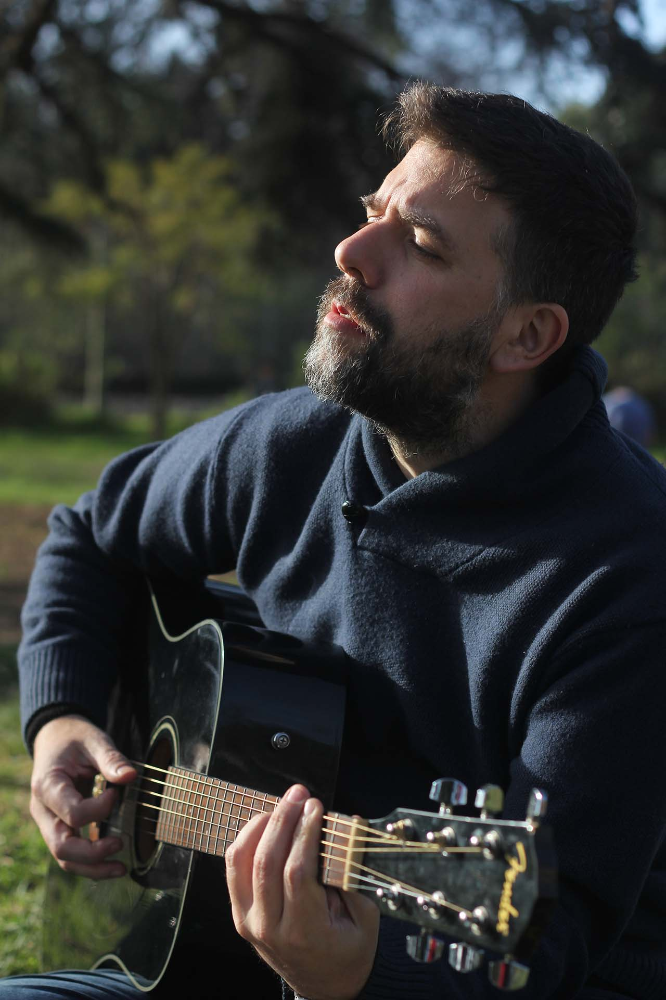

EP01 "Debut"
Su primer EP titulado "Debut" consta de tres canciones originales en las cuales se expresa una narrativa existencial influenciada por el pensamiento filosófico francés. Cada tema es una reflexión profunda sobre la vida, el viaje personal, y la búsqueda de sentido.
Un álbum debut que explora las luchas y los triunfos de la vida urbana, combinando ganchos melódicos con ritmos contundentes.

EP02 "Riviere"
Un álbum debut que explora las luchas y los triunfos de la vida urbana, combinando ganchos melódicos con ritmos contundentes.
El Magyar Del Molino permanece profundamente conectado con sus raíces y a menudo regresa a Buenos Aires, Argentina, para apoyar iniciativas comunitarias y ser mentor de aspirantes a artistas. Su viaje desde el talento local hasta la sensación global es un testimonio de su dedicación, pasión y el poder transformador de la música.
Colaboraciones
El Magyar Del Molino se define como musico instrumentista, siendo el bajo electrico y la guitarra como principales, a su vez colabora con synthetizadores, pianos y percusion.
Su formacion en canto y coro en la Escuela de Musica "Jose Pedro Esnaola", determino su rango de Baritono, en el cual se extiende desde Bajo a Tenor.